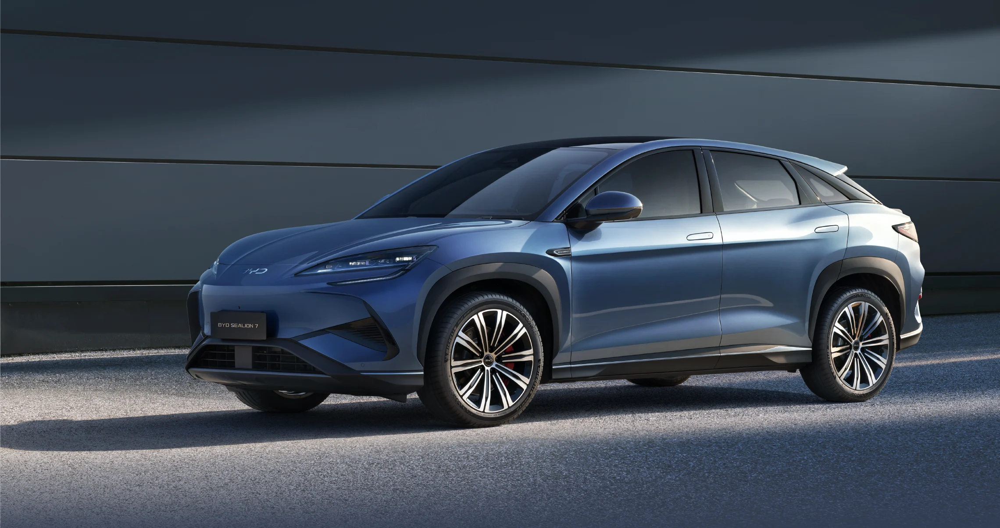
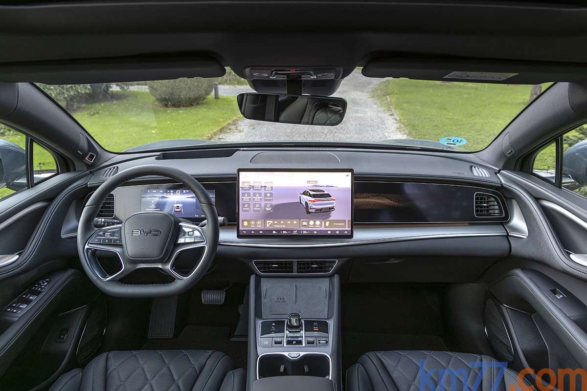

El BYD Sealion 7 es un SUV 100 % eléctrico que combina un diseño elegante, un amplio espacio interior y
tecnología de última generación. Desarrollado sobre la plataforma e-Platform 3.0 Evo, ofrece un excelente
rendimiento, una conducción cómoda y una gran eficiencia energética, convirtiéndose en una opción ideal para
familias y personas que buscan un vehículo moderno y sostenible.
Equipado con la reconocida Blade Battery, el Sealion 7 brinda una alta autonomía, carga rápida y elevados
estándares de seguridad. En su interior incorpora una pantalla táctil giratoria, sistema de
infoentretenimiento inteligente, asistentes avanzados de conducción y acabados de alta calidad,
proporcionando una experiencia de manejo confortable y tecnológica.
Gracias a su combinación de potencia, innovación y seguridad, el BYD Sealion 7 destaca como uno de los SUV
eléctricos más avanzados de BYD, ideal tanto para recorridos urbanos como para viajes de larga distancia.

S/209,000